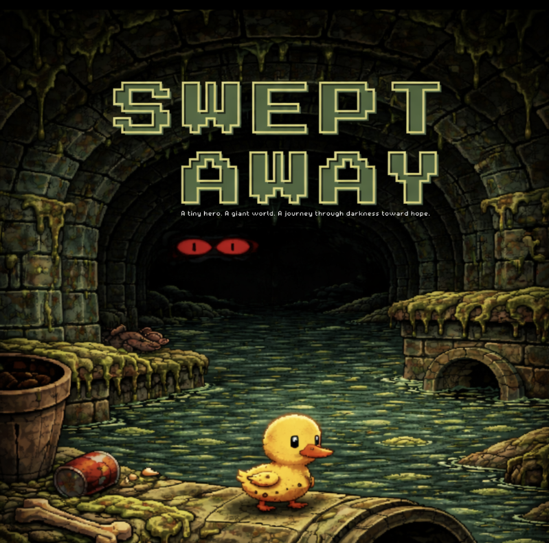
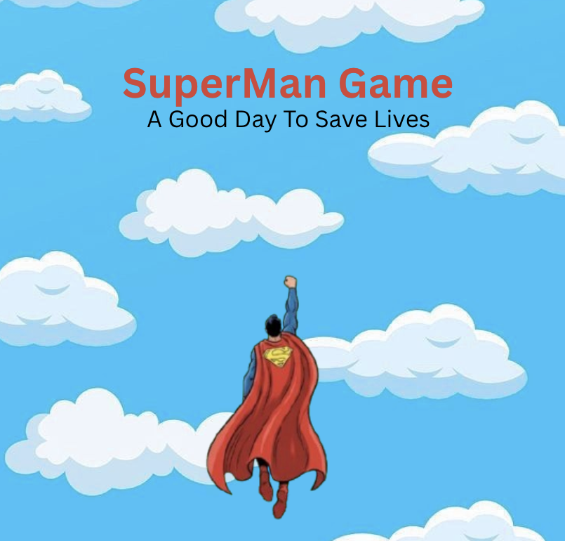
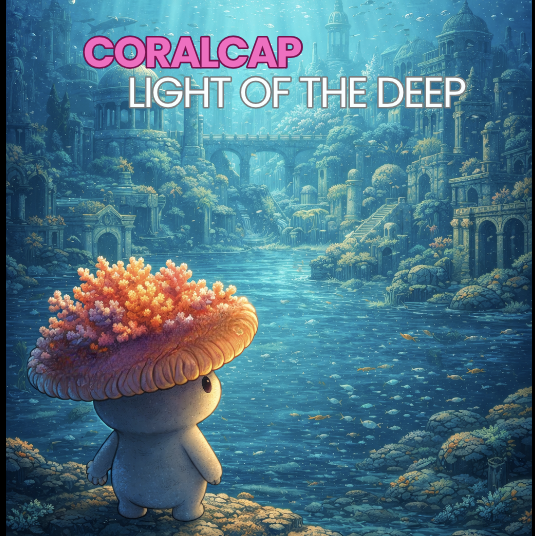
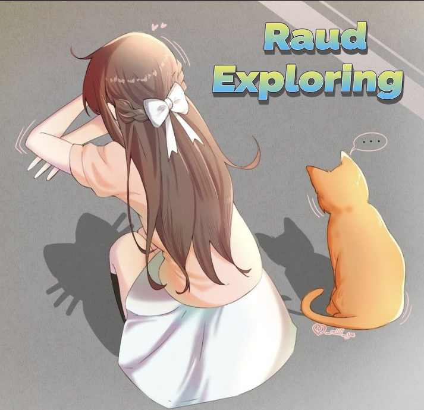
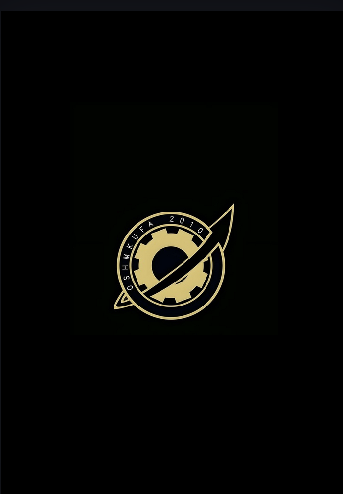

WELCOME TO RAUD'S JOURNY
MEETING RAUD
I tested systems for a living… but secretly,I build worlds.
I’m a Computer Scientist who moves between logic and imagination.
From Quality Assurance and automation to designing
interactive ideas and game concepts.
I’m inspired by anime, games, late-night playlists, and the
stories
that stay with you long after they end.
The
Path
So
Far
Jr. Quality Assurance
✦ Conducted functional, usability, and regression testing on various mobile games.
✦ Reported, tracked, and validated bugs using structured QA workflows.
✦ Documented test cases and results using TestRail.
✦ Provided feedback on game mechanics, performance, and user experience.
✦ Worked with cross-functional teams to
ensure fixes were correctly implemented.
✦ Participated in brainstorming sessions for gameplay and feature improvements.
RPA - Robotic Process Automation
Automation Developer: ✦ Develop automation projects and components according to the solution design, using the dedicated automation software. ✦ Adhere to the automation development methodologies and RPA best practices. ✦ Do software testing for the automation workflows and work with the Tester. ✦ Create the technical documentation forthe automations developed, according to the best practices. ✦ Review code written by peers and facilitate knowledge transfer.
Business Analyst: ✦ Engage with stakeholders and conduct high-level assessments to identify business processes with automation potential. ✦ Perform in-depth process analysis for the processes selected for automation and create the relevant documents, such as the Process Definition Document. ✦ Define the business requirements and the test case scenarios for the future state, automated business processes.
IT COOP
✦ Provided technical support to hospital staff for computers,
printers, and network connectivity issues.
✦ Assisted in installing, configuring, and maintaining computer systems and software used in hospital
departments.
✦ Assisted in user account setup and access management for hospital systems.
✦ Documented technical issues and solutions to improve IT support processes.




INVENTORY
Tools and artifacts collected along the journey
Soft Skills
- Communication
- Problem Solving
- Flexibility
- Critical Thinking
- Team Collaboration
- Analytical Thinking
- Self-Motivation & Initiative

Technical Skills
- Software Testing & QA
- HTML/CSS/Javascript
- Unreal / Unity engine
- Game Testing
- Game Developer / Designer
- Test Case & Execution
- Bug Tracking & Reporting
- TestRail
- UiPath Apps & Automation Hub
- Workflow & Process Optimization
- C# / C++
- Java
- Jira
- SQL Basics
- UI/ UX
- ✦ Unity gameteams for game development - Taibah Vally with CG Spectrum
- ✦ Game Design Fundamentals - MCIT & MISK
- ✦ Participant as an Organizer (Leader) in Intentional Book Fair - Ministry of Culture
- ✦ Problem Solving Competition - Microsoft Club
- ✦ Cyber Security and Data Privacy - Ataa Digital
- ✦ Speaking and Presenting Skills - The Literary and Cultural Club
- ✦ Agentic Automation Associate
- ✦ Certificate of Appreciation - Dean of the Faculty of Computer Science and Engineering
- ✦ Machine Learning for All - Google
- ✦ Securing Access to Web and Cloud Applications - Oracle
- ✦ Game Design Fundamentals From MCIT & MISK
- ✦ Car Rental System
- ✦ Pizza Delivery System
- ✦ 2nd place in Ministry of Environment, Water & Agriculture hackathon
- ✦
Researches:
1.Detecting and Analyzing Facial and Eye Features of Drugs Abuser Using AI
2.Enhancing Pedestrian Pose Detection using Deep Learning Techniques
THE FINAL SHRINE
Rest here, Traveler
You've journeyed far...
Thank you for exploring Raud's World